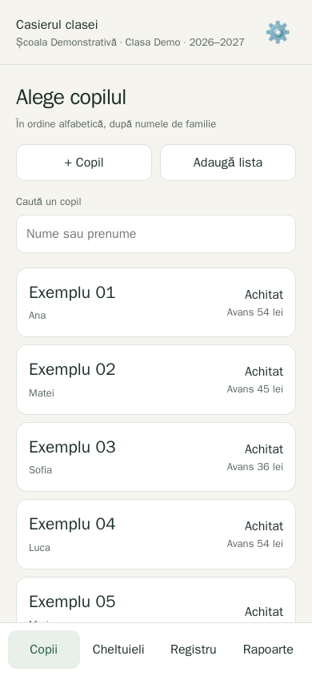
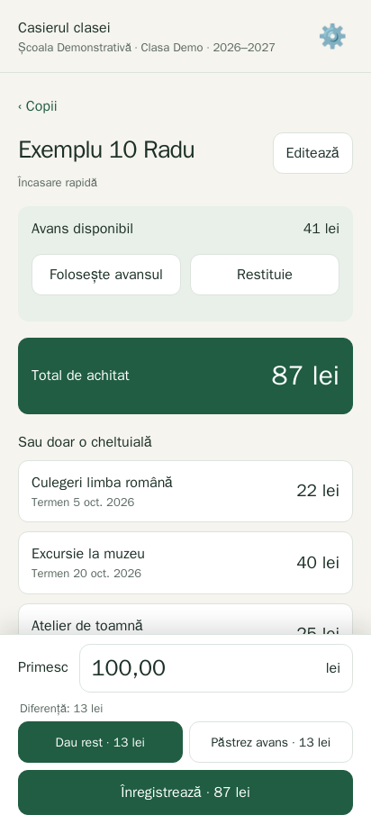
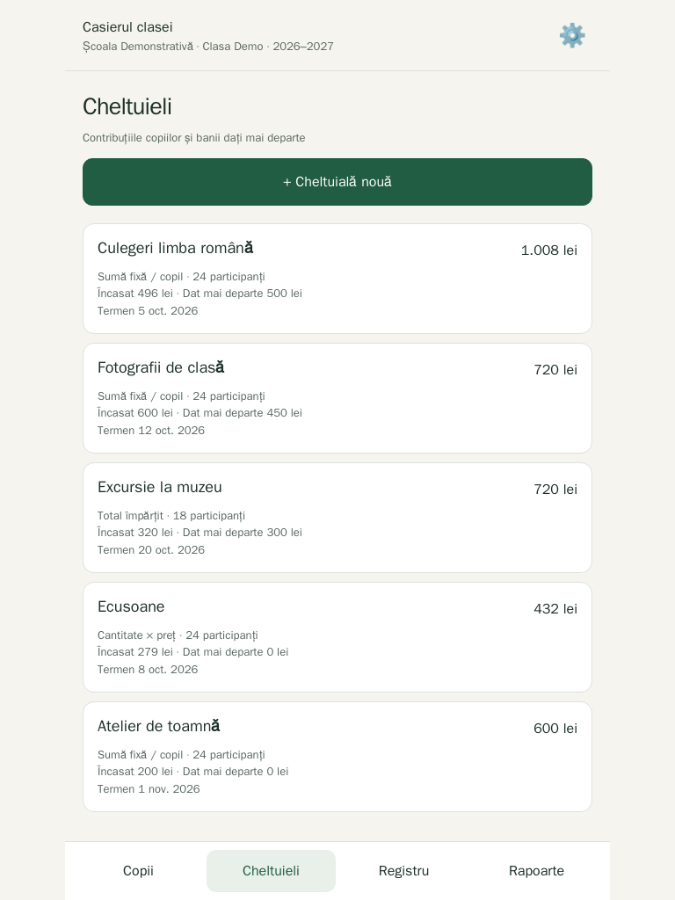
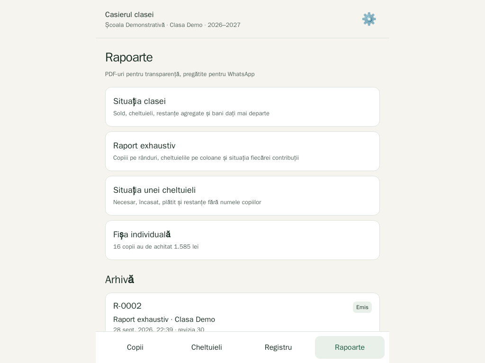

Про додаток
Casierul clasei («скарбник класу») призначений для батьків, які опікуються класним фондом. Застосунок зберігає в одному місці внески кожної дитини, витрати класу й кожну виплату, тож скарбник завжди знає залишок і хто ще має заплатити.
Застосунок румунською, суми — у леях. Доступ — за запрошенням: скарбник активує власний телефон, планшет чи комп’ютер, і всі вони бачать той самий клас. Облікових записів для батьків немає.
Галерея
Усі дані на цих знімках вигадані.




Як це працює
- Налаштуйте клас. Додайте школу, клас і навчальний рік, а потім дітей — по одному або вставивши список.
- Створіть витрати. Виберіть дітей, які беруть участь, і спосіб розподілу вартості: фіксована сума на дитину, загальна сума, поділена між ними, або кількість на дитину, помножена на ціну за одиницю.
- Прийміть гроші. Торкніться дитини й виберіть усе, що вона винна, або одну витрату. Великі кнопки округлюють суму вгору до наступних 10, 50 чи 100 леїв, а різницю повертають як решту або залишають як аванс.
- Платіть і ведіть облік. Записуйте виплачені гроші з призначенням і, за бажанням, витратою, до якої вони належать, і стежте за залишком класу в журналі.
Можливості
- Рахунок кожної дитини: Внески, заборгованості, аванси й повна історія для кожної дитини.
- Аванси, що сходяться: Аванс згодом може покрити інший внесок або бути повернутим, і його використання ніколи не рахується як нові надходження.
- Виправлення без стирання: Підтверджену операцію скасовує окреме виправлення з причиною, тож історія завжди залишається повною.
- Точно до останнього бана: Суми зберігаються в цілих банах — румунських копійках, — а поділ загальної суми точно розподіляє кожну до останньої.
- Надійно навіть за слабкого зв’язку: Для збереження потрібен інтернет, але якщо відповідь загубилася, повторна спроба підтверджує той самий запит без подвійного запису платежу. Зміни, зроблені на іншому пристрої, треба перевірити перед збереженням.
- Експорт JSON: Зручна для читання копія даних та історії без жодних облікових даних.
Під капотом
Casierul clasei працює на Node.js 24 із вбудованим SQLite і без залежностей під час виконання. Він оновлюється за допомогою pwa-kit, а запрошеннями й пристроями керують через PWA Invite Console. Щоденні резервні копії перевіряються перед збереженням. Проєкт має відкритий код за ліцензією GPL-3.0.